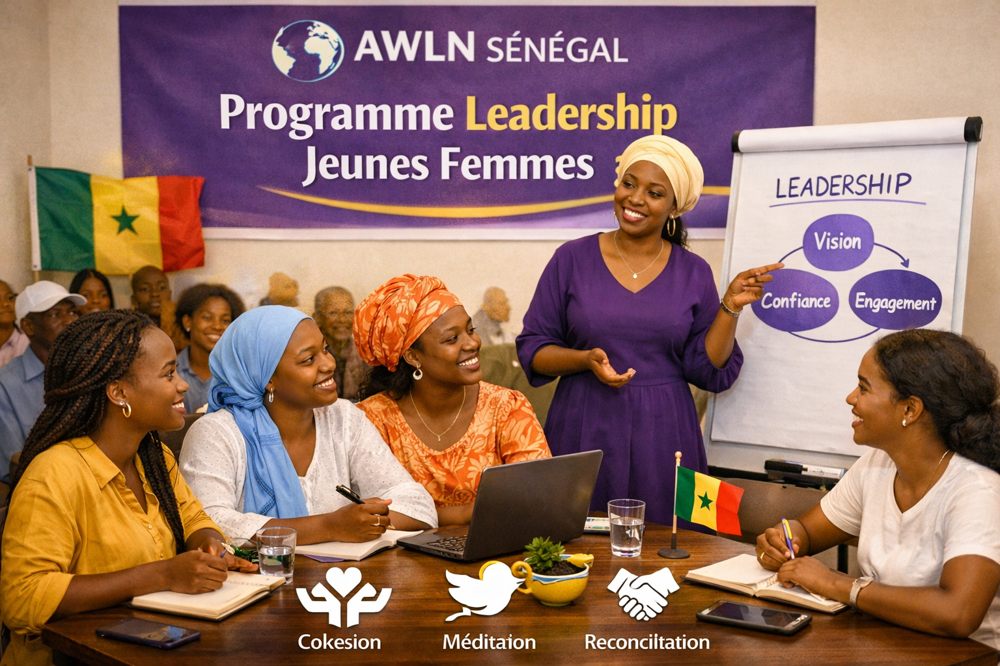

Ce programme vise à renforcer les capacités des jeunes femmes sénégalaises à travers des formations, du mentorat et des ateliers pratiques. L’objectif est de favoriser leur participation active dans la gouvernance et la prise de décision au niveau local et national.
Le projet est mené en partenariat avec ONU Femmes et des organisations locales, et a déjà permis de former plusieurs cohortes de jeunes leaders.
Les participantes bénéficient d’un accompagnement personnalisé, de sessions de développement personnel et d’opportunités de réseautage avec des femmes leaders expérimentées.